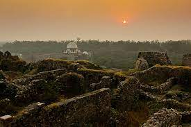
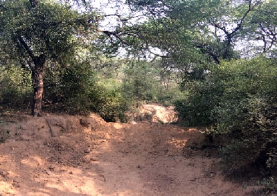
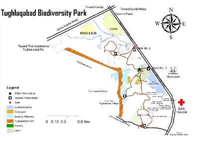

  
Location and Landscape Features The District Park at Tughlaqabad Tehkhand Phase II located in the southern ridge spreads over an area of 200 acre and includes the eastern gentle slope of the Tughlaqabad Fort area. The terrain is undulating with ridges and depressions; most of the ridges are flat, and are either barren or with scattered bushes of Prosopis juliflora. A number of shallow depressions are present across the landscape and these are recharging zones of rainwater. There are four major waterbodies (wetlands) that receive surface drainage from the Fort area. These waterbodies are filled with untreated sewage discharged from the encroachments inside the Tughlaqabad Fort area. The storm drains (surface drainage channels) have been converted into sewers, and sewage flows into waterbodies by gradient. Major functions of Tughlaqabad Biodiversity Park Tughlaqabad Biodiversity Park harbours and preserves natural heritage of the area including flora and fauna, besides providing a wide range of ecological services and goods such as: (i) recharging of ground water, (ii) buffering local weather, (iii) serving as sink for CO2 and other pollutants, (iv) conserving natural heritage of the area, (v) promoting environmental awareness among the public and students, (vi) serving as a living laboratory and hub for environmental education among school, college and university students, and (vii) providing recreational value to the public. Coupled with its ecological diversity and restored waterbodies, it will be an important birding area, besides forming a habitat for bigger mammals. Restoration of Tughlaqabad Biodiversity parks has been initiated which includes: Development of Infrastructure To prevent cattle grazing and illegal dumping of solid waste inside the Biodiversity Park, construction/ strengthening of boundary wall is being initiated. Nature trails are also being laid. To facilitate the movement of Visitors, wicket Gates are being constructed. Site Preparation and De-weeding For the upcoming plantations in Monsoon pits of 1*1 feet size have been dug out and enriched with farmyard manure. To keep check on the exotic and invasive weeds such as Argemone sp., Hyptis suvaveolens, Parthenium, they are constantly being uprooted at large scale. Lantana camara and new saplings of Prosopis juliflora, are being eradicated by using Cut Root-Stock Method.